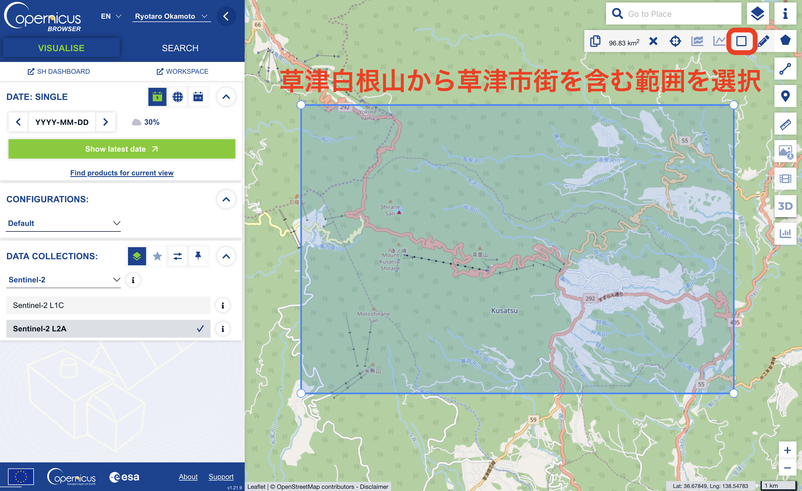
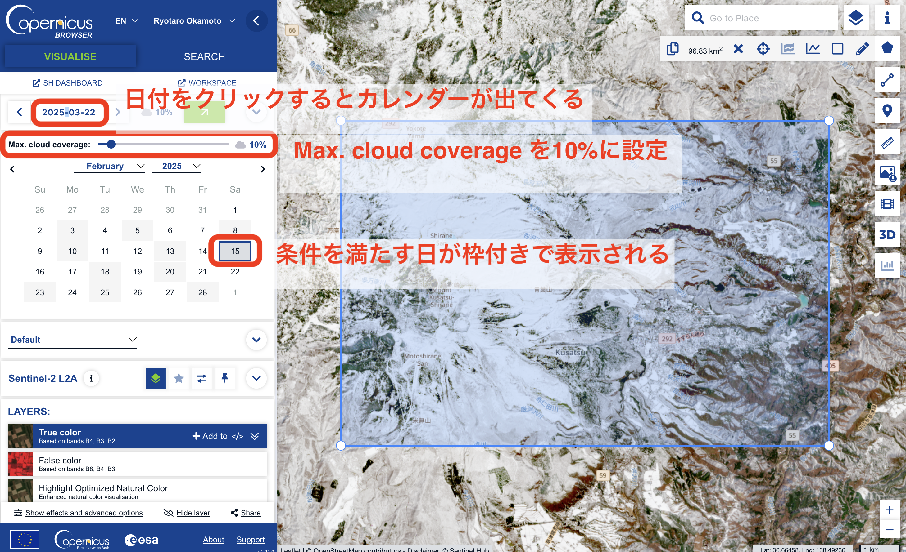
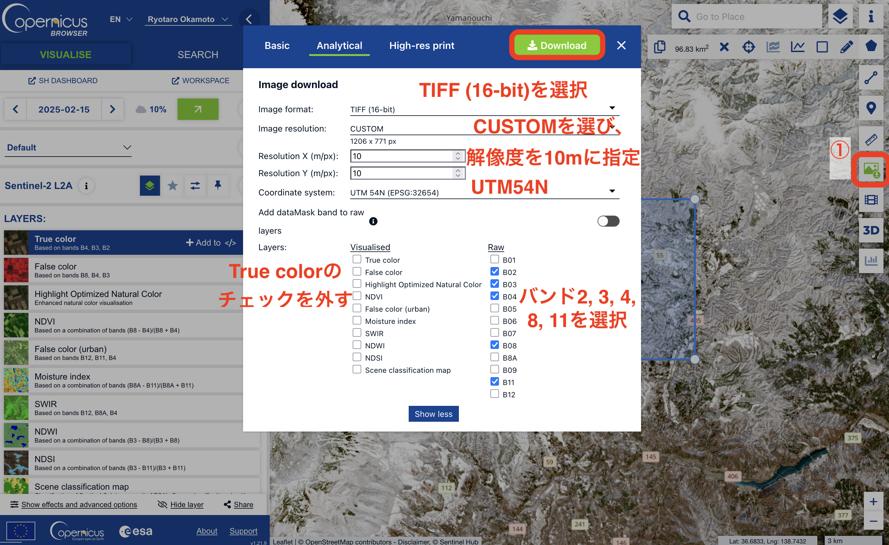

5 衛星画像による生態系観測
この章からはグループワークを含む実践的な解析に取り組んでいきます。まずは、衛星画像を用いたリモセンを体験してみましょう。ここでは、欧州宇宙機関（ESA）が2015年から運用している[Sentinel-2](https://www.restec.or.jp/satellite/sentinel-2-a-2-b.html)衛星コンステレーション（複数の衛星からなる観測網）のデータを使います。Sentinel-2衛星で撮影された過去画像はオープンデータとして公開されており、誰でも無料で使うことができます。Sentinel-2には他にも、空間解像度や撮影頻度が比較的高い（解像度はバンドによるが最高10m、撮影頻度はおおよそ10日に1回）、可視光から近赤外光まで幅広いバンド（12バンド）の画像が得られるといったメリットがあります。
まずは、解析用のフォルダをPG2/5/として作成しましょう。
5.1 今回の課題
自分たちで選定したエリアのSentinel-2画像をダウンロードし、他の地理情報（DEMデータや行政区画、地理統計など）と組み合わせた解析を実施してください。
実施した解析について、以下の4つの項目にしたがって、7分程度のスライドを作成し、説明してください。
- 背景・目的
なぜそのエリアを選び、その解析を行なおうと思ったのかに関する背景と、解析の目的についての説明。 - 材料・手法
使ったSentinel-2画像や地理情報と、行った解析手法に関する簡潔な紹介。 - 結果
解析結果の説明。 - 考察・展望
解析結果から言えること、示唆されることについての提案。背景・目的で提示した目的に対して何が言えそうかを説明。展望では、今後解析を続けるとしたらどのようなことに取り組むべきか、何が期待できそうかについて述べる。
コツは以下の2点です。
背景・目的と、考察・展望がきちんと対応してるか気をつける。
材料・手法と結果は簡潔さを意識しながら、聞いた相手が作業を再現できるような説明を心がける。
5.2 画像の取得
ではまずは、Sentinel-2画像の取得を行ってみましょう。画像の検索・取得にはCoperncus Browserを使います。まずはアカウントを作成し、ログインしましょう。
ここでは、試しに冬から春にかけての草津温泉周辺の衛星画像を数枚取得し、雪解けや植物の芽吹きの様子を可視化します。
まずは、データが欲しい範囲（Region of Interest, ROI）を指定します。

草津白根山から草津市街を含む範囲を矩形で選択しましょう。範囲は大体で良いです。
次に、データを検索します。YYYY-MM-DDと書かれている場所をクリックするとカレンダーが出てくるので、まずは2025年の2月を選びましょう。画像を検索する際には、雲に覆われている割合が一定以下の画像を選ぶこともできます。ここでは、10%以下の写真を指定します。ここでは、2025/2/15のデータが当てはまったので、これをクリックし、表示します。

それでは、画像をダウンロードしましょう。まず、画面右端に表示されているダウロードボタンを押します。するとダウンロード画面がポップアップで出てくるので、設定を変更します。今回は上部のタブから「Analytical」を選び、諸々の設定を以下のように変えます。「Image Format」は取得する画像の種類と画素値の表現方法を意味しています。ここでは地理座標の紐づいたTIFF形式、画素値は16bit (画素値を\(0 - 2^{16}\)で表現)を指定します。解像度は10mを指定し、バンドは2(青), 3(緑), 4(赤), 8(近赤外), 11(短波赤外) を選びます。

同様に、2025/3/22、2025/4/21、2025/5/8の画像をダウンロードしましょう。「Browser_images.zip」というような名前のファイルがダウンロードされるます。ダウンロードした画像を保管するためのフォルダ「PG2/5/images/」を作り、zipファイルを解凍した中身の画像ファイルを全てこの中にコピーします。images/直下に20枚の画像が保存されているはずです。